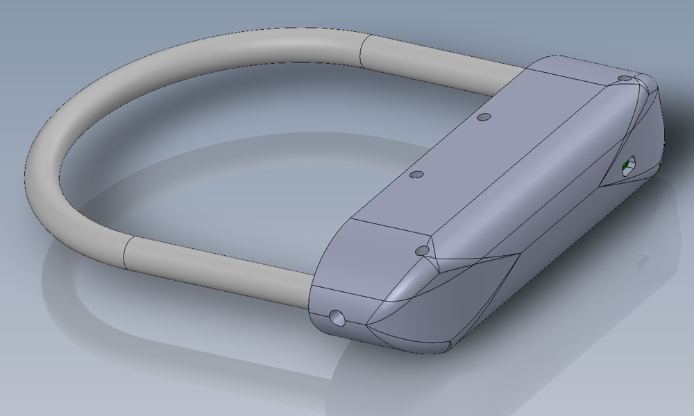
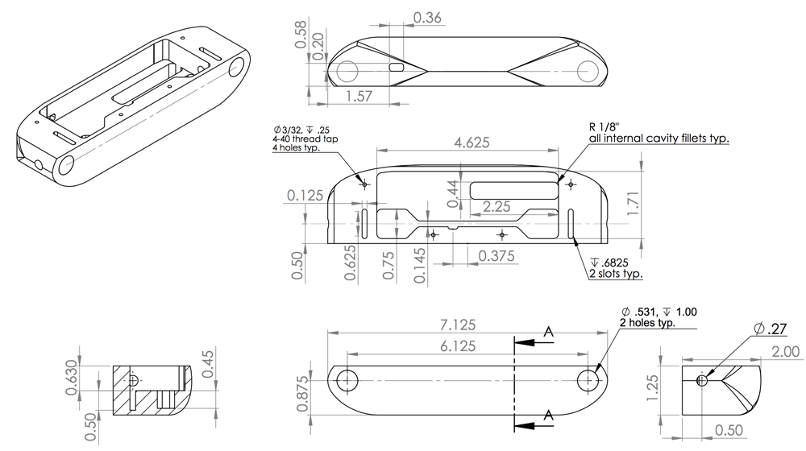
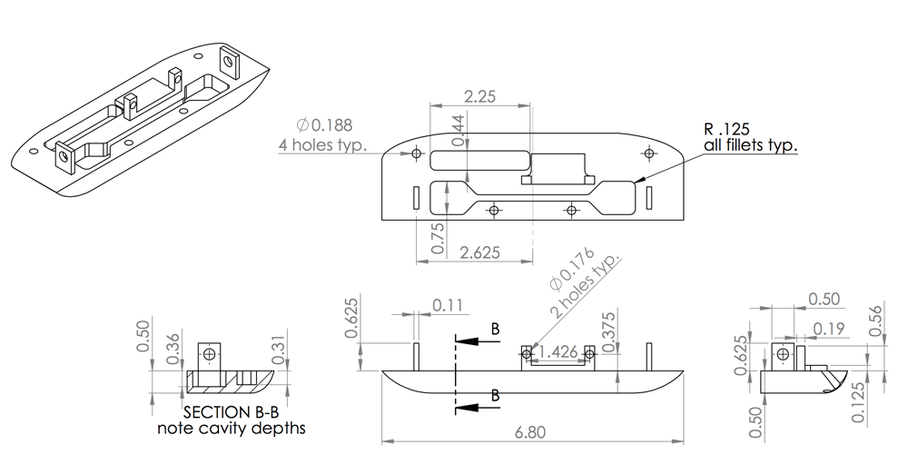
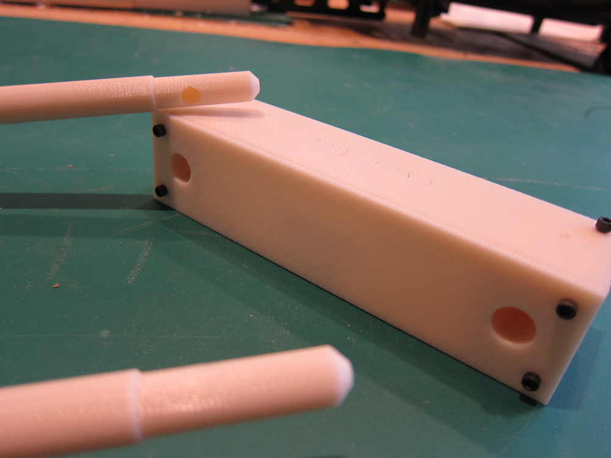

HAAM Lock
A Bluetooth-enabled, Smartphone-compatible Bicycle Lock
Designed/Built Winter-Spring 2013 for NUvention: Web (EECS 372) at Northwestern University
HAAM Lock was conceived as the ultimate bike lock: intuitive, connected, and secure. Operated by iPhone via Bluetooth LE.

A screen of the early HAAM Lock app alongside a 3D-printed ABS hardware prototype
Overview and Background
HAAM Lock started life as CycleTracer in the fall of 2012. The original idea was to create a smart bike lock to track your bike on a map in real time and send you push notifications if the lock was cut or stolen. I joined the team in December to work on the physical product development as we entered Nothwestern's NUvention: Web entrepreneurship program.
We pivoted in late winter, dropping the tracking and alarm features over concerns about cost and battery life, but the xproduct's most compelling feature remained: its smartphone connectivity via Bluetooth LE. This connection allowed a user to control the HAAM Lock without a key (one of a conventional lock's most significant vulnerabilities), keep track of parking locations, and blast information to social media and stolen bike databases if the user's bike is stolen. We created several functional prototypes, placed in two pitch competitions at Northwestern, and launched a crowdfunding campaign, but the team disbanded in the summer of 2013 and the product progressed no further.
The team had several important takeaways from this project. First, we learned that the ideal smart bike lock is very expensive to build and commercialize with current technology. The electronics costs would be reasonable, but ensuring a sturdy and secure product would require some complex and expensive manufacturing, even at scale. The final product would have been priced in the range of $120-150, too costly for the vast majority of users.
We also learned, however, that all the technology and consumer interest is in place for this type of product to be successful at the right price point. Several other teams have also tried and failed to build a connected bicycle lock, but as costs come down and the Internet of Things becomes more of a reality, we fully expect a successful product to emerge eventually. Unfortunately, that product won't be the HAAM Lock, but it will probably have many of the same features.
Solidworks Models

An external look at the final 3D model

Internal rack, pin and gearing hardware pieces are visible in blue.

USB breakout board (left), servo (center), and PCB (thin, right) are visible in blue. Battery visible in red.

A closer look at the pin assembly, which seals the two halves of the body together when locked.

Engineering Drawings

Lower half of main body.

Upper half of main body. Upright tabs allow for main locking pins to secure the pieces together when locked.
3D Printed Prototypes
Unfortunately, few photos currently exist of the early prototypes. I will post more if I come across them.

3D printed prototype, as seen at the top of the page. This prototype's construction differs greatly from the final version.
Manufacturing
The Solidworks models were imported into NX to develop machining operations for the upper and lower parts as well as the main body contour.
Machining the upper body section
Machining steps, in order, for the upper piece of the main body.
Machining the lower body section
Machining steps, in order, for the lower piece of the main body.
Machining the combined body countour
Machining steps, in order, for the external contours of the main body after both pieces are combined.